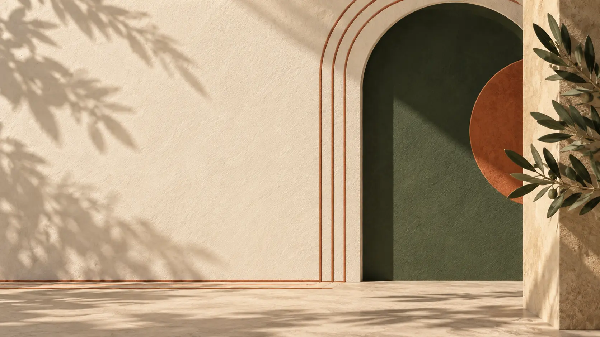
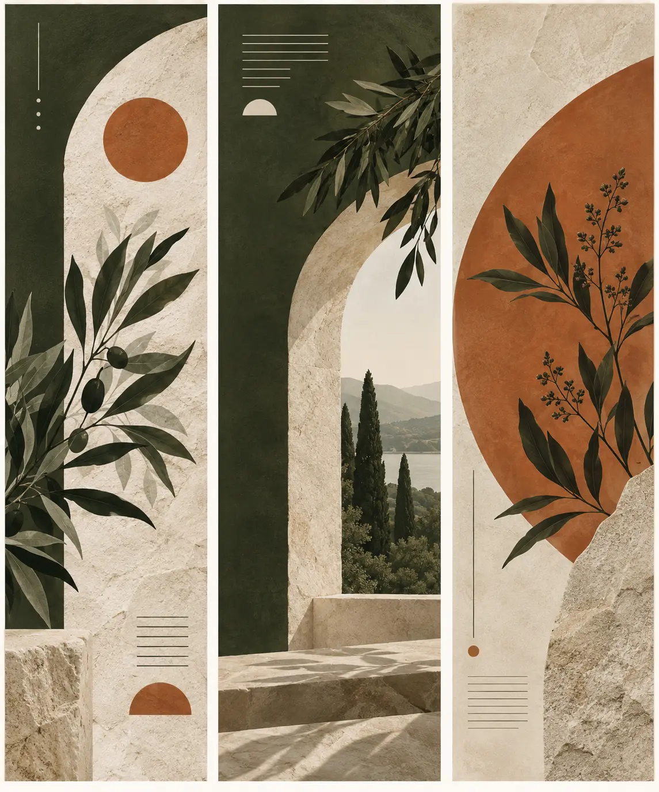
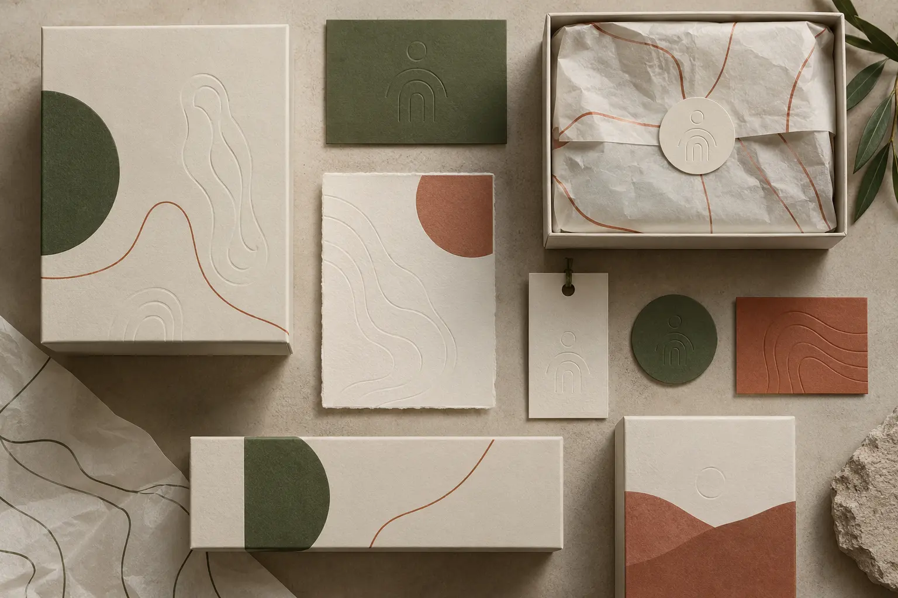
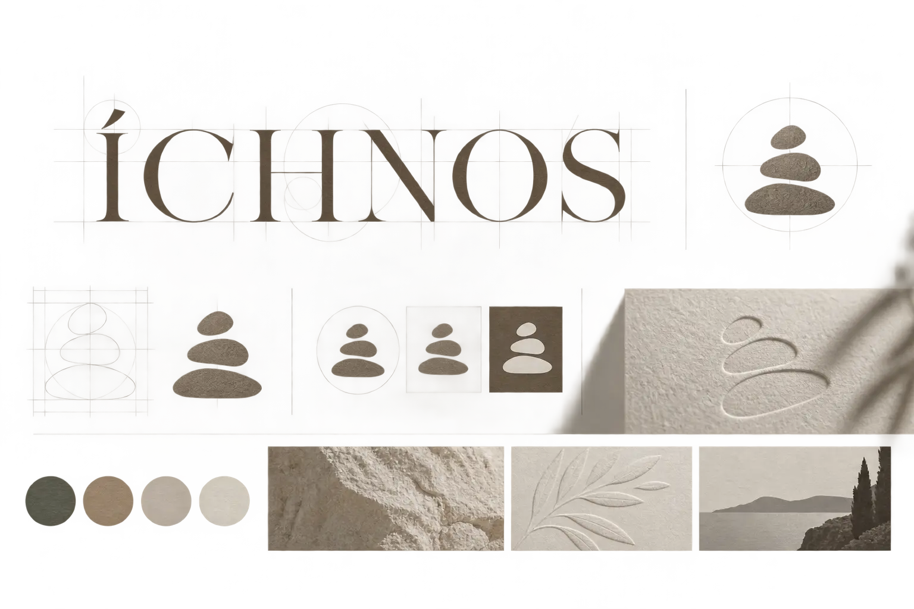
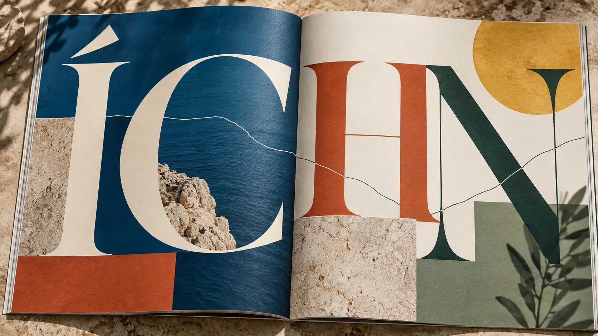
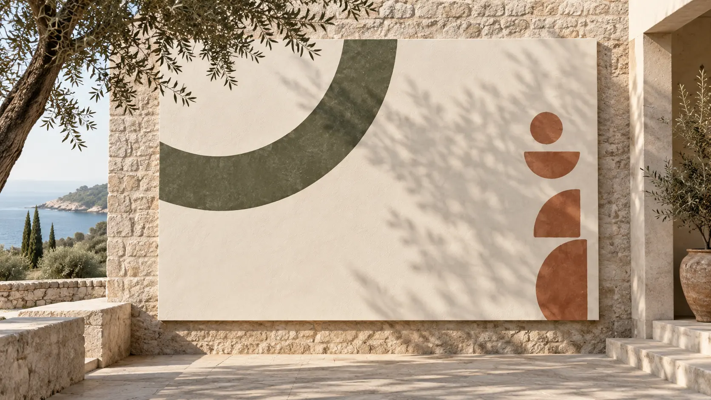
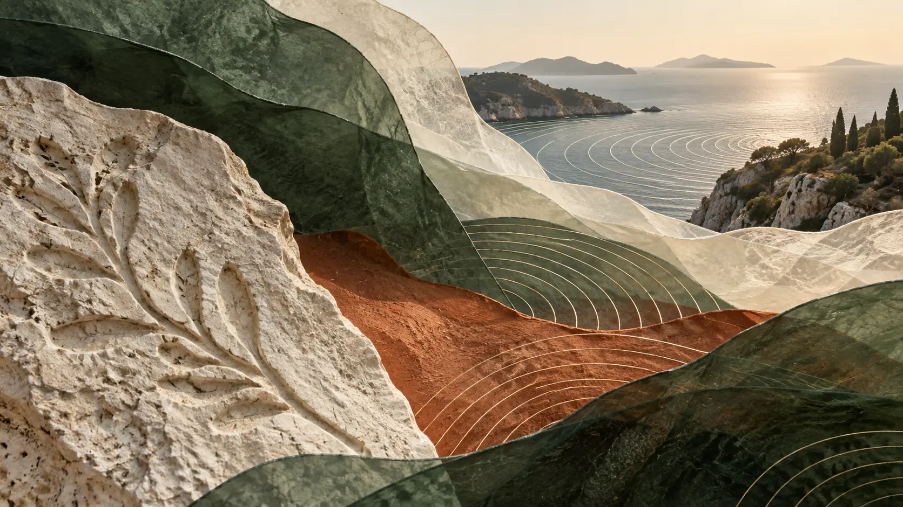

HOLDS
MEMORY.
A typographic poster built around absence and shadow.

A place, remembered.
ÍCHNOS is built from traces: an arch, a horizon, a shadow and the marks left by landscape.
The new direction removes literal product photography and lets typography, material and composition carry the world.

Refined serif proportions meet a small stacked trace symbol. Both work through scale, emboss and restraint.


Boxes, cards, tissue and labels use relief, blind emboss and restrained color instead of decorative product shots.



Five new expressions extend the identity through symbol, editorial rhythm, texture and spatial scale.
A typographic poster built around absence and shadow.
The mark becomes a quiet repeat pattern.
Serif type floats over a restrained Mediterranean field.
A tactile sample archive for color and finish.
The identity becomes environmental typography.